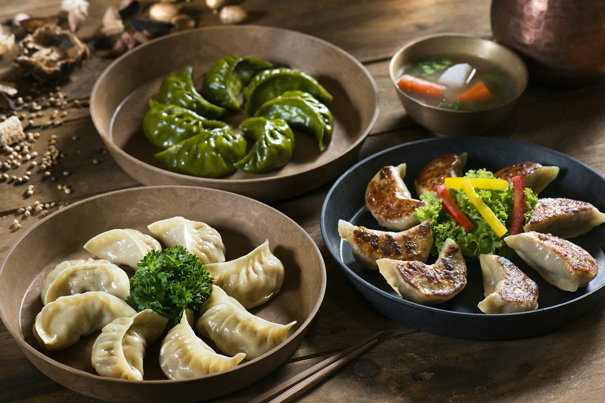
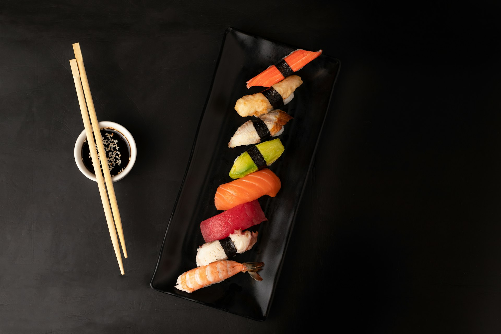
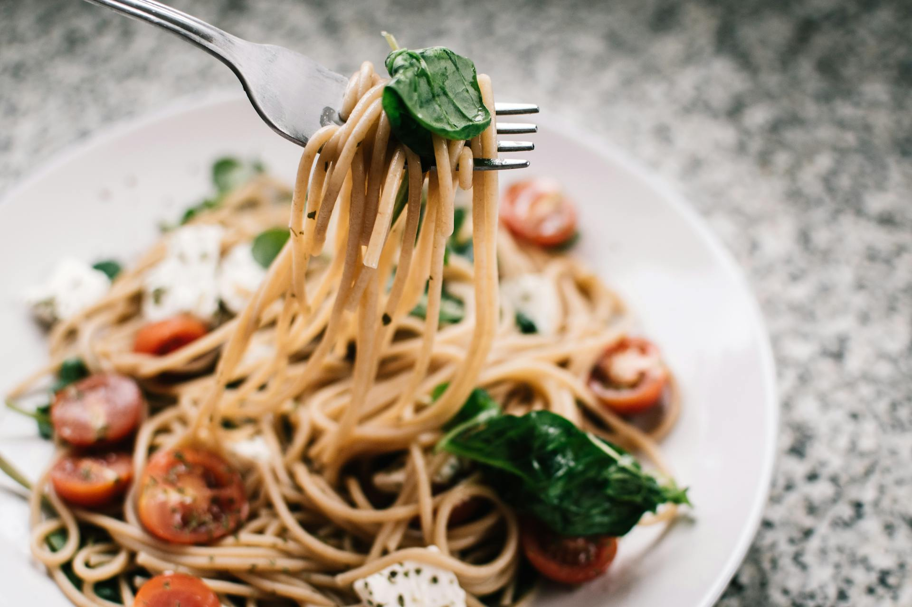
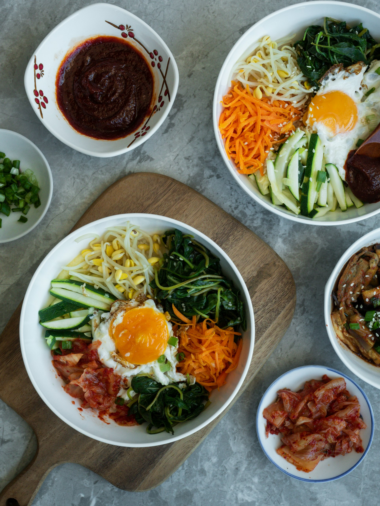

往下滑
↓
18
景點探索
10
道地美食
3
天數行程
秋
最佳季節
告別夏日的酷熱與潮濕，秋天的釜山氣候宜人，特別適合漫步老城區、搭乘海岸鐵道，品嚐海鮮美食
海雲台、廣安里海水浴場的秋日風情，沙灘上少了擁擠的人潮，多了份悠閒與愜意
甘川文化村階梯式彩色小屋、龜浦山洞壁畫村，秋天涼爽的氣溫最適合穿巷走弄
松島海上纜車航跨大海，俯瞰秋日港灣風光，釜山塔頂眺望城市與海洋的交界線
札嘎其魚市場的活跳海鮮、烤扇貝、黑糖餅……道地滋味從街頭小吃到市場佳餚
梵魚寺的金秋楓紅、洛東江河口生態公園的蘆葦花海，感受釜山的靜謐自然
廣安里大橋夕陽、影島大橋開橋景觀、影島太宗台的懸崖海景，秋日暮色特別動人
從人氣景點到秘密基地，精選6大秋天釜山看點

階梯式彩色小屋錯落山丘，被譽為「釜山馬丘比丘」，是藝術與在地生活融合的最佳範例

釜山最具代表性的海水浴場，秋日沙灘寧靜優美，是散步與觀夕陽的絕佳去處

跨海纜車俯瞰松島與港灣風光，底部為透明玻璃膠囊膽，站在上頭俯瞰大海，刺激又難忘

韓國最大水產市場，秋天正值當令，螃蟹、鮑魚、扇貝等海鮮肥美誘人，不能錯過

釜山著名的佛教古剎，秋季楓紅環繞，古剎禪意與自然美景交織，心靈療癒之旅

廣安里大橋夜景聞名，秋夜涼爽的海風吹拂，橋上燈光與海面波光相互輝映，浪漫滿分
從市場現撈海鮮到街頭小吃，釜山美食選擇豐富，每一口都是海的味道

活跳海鮮現場料理，秋天螃蟹正肥，鮑魚鮮甜

海雲台路邊攤經典，秋天來一顆烤扇貝最對味

BIFF廣場人氣小吃，酥脆外皮流出甜蜜黑糖餡

釜山代表料理之一，秋天配上一碗熱湯飯剛好